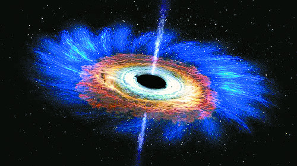

주간탐사
Topic : 우주가속팽창이론 '틀렸다'vs'맞다'

우주가 점점 빨리 팽창하고 있다는 유명한 천체물리학 이론인 우주가속팽창이론과 이를 뒷받침하는 '암흑에너지'의 존재에 의문을 제기한 연구 결과가 나왔다. 가속팽창을 확인한 중요한 관측의 기본 가정이 틀렸다는 새 증거가 공식적으로 학계에 제기됐다. 아직은 소수의견이지만 기존의 여러 연구로 축적된 암흑에너지 이론을 보완할지, 일부 가속팽창 연구나 암흑에너지의 존재를 부정할 단초가 될지 주목된다.
암흑에너지는 우주의 68%를 구성하고 있을 것으로 추정되며 ‘미는 힘’을 제공해 우주를 팽창시키는 원천으로 여겨진다. 여러 연구와 간접 관측을 통해 존재 가능성이 높을 것으로 예측되지만, 아직 직접 관측을 통해서는 정체가 확인되지 않은 이론상의 개념이다. 암흑에너지는 누르는 힘이 아닌 잡아당기는 힘인 ‘음(-)압’을 일으킨다. 콜라 병을 따면 콜라병 내부의 압력이 음(-)이 되며 콜라가 팽창하는 것과 비슷하다.
암흑에너지는 1990년대까지 가설 상의 개념이었다. 1990년대 말 과학자들은 먼 우주의 초신성을 관측한 연구를 통해 우주가 약 40억 년 전부터 점점 더 빨리 팽창(가속팽창)하고 있다는 사실실을 알아냈다. 이 현상을 일으킬 유력한 원인으로 암흑에너지가 꼽히면서 존재 가능성이 높은 것으로 받아들여지고 있다. 우주 가속팽창 연구를 주도한 세 명의 과학자들은 2011년 노벨 물리학상을 받았다.
미국항공우주국(NASA)과 유럽우주국(ESA)이 우주 관측 위성 코비(COBE), 우주배경복사탐사위성(WMAP), 플랑크 우주망원경을 통해 포착한 우주 탄생 직후 38만 년 뒤 우주에 퍼진 원시 빛(우주배경복사)의 분포와 우주의 평탄성(우주가 모든 곳에서 기하학적으로 균일한 성질)을 연구한 결과도 암흑에너지의 존재를 간접적으로 지지하고 있다.